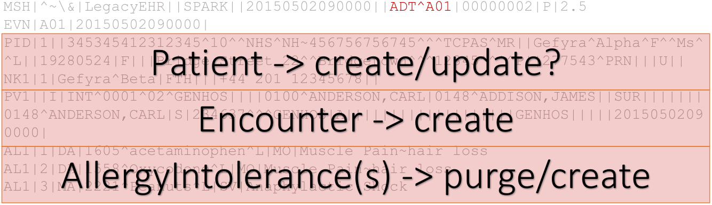
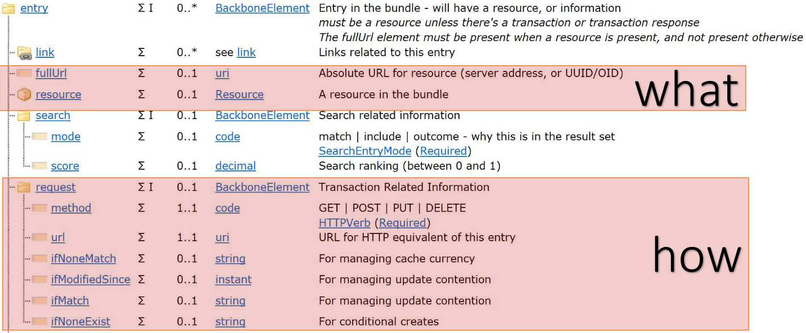

Per effettuare un mapping da HL7.v2 a FHIR ci si avvale della risorsa Bundle; questa può presentarsi in due tipologie Message oppure Transaction
(maggiormente utilizzata). In entrambi I casi l’obiettivo principale è quello di traduttore I segmenti del messaggio HL7 in
risorse FHIR che devono essere, in secondo luogo, identificate e referenziate tra loro.
Uno scenario tipico è quello del mapping di un mesaggio V2 ADT_A01:
MSH|^~\&|LegacyEHR||SPARK||20150502090000||ADT^A01|00000002|P|2.5 EVN|A01|20150502090000| PID|1||345345412312345^10^^NHS^NH~456756756745^^^TCPAS^MR||Gefyra^Alpha^F^^Ms^^L||19280524|F|||Bridge Street 22^^Bridgetown^^^12345^^^^P||277543^PRN|||U|| NK1|1|Gefyra^Beta|FTH|||+44 201 12345678|| PV1||I|INT^0001^02^GENHOS||||0100^ANDERSON,CARL|0148^ADDISON,JAMES||SUR|||||||0148^ANDERSON,CARL|S|234637^^^GENHOS|A|||||||||||||||||||GENHOS|||||20150502090000| AL1|1|DA|1605^acetaminophen^L|MO|Muscle Pain~hairloss AL1|2|DA|1558^Oxycodone^L|MO|Muscle Pain~hairloss AL1|3|MA|2221^Peanuts^L|SV|Anaphylactic Shock
Come già anticipato, per raccogliere tutte queste risorse all'interno di un unico oggetto si utilizza una risorsa Bundle. Una volta identificata la tipologia di messaggio da processare, si devono definire le azioni che il server FHIR dovrà intraprendere per rappresentare concretamente il messaggio V2 in ottica FHIR. Ciò è possibile tramite l’adozione di un Bundle di tipo Transaction che permette al sever FHIR di capire sia quali informazioni sta ricevendo sia in che modo queste devono essere processate (What and How).
Il messaggio d'esempio si compone di diverse risorse FHIR come: MessageHeader, Patient, Encounter, Allergytolerance(s). Ognuna di queste dovrà essere processata singolarmente.
Una volta estrapolato il paziente dal messaggio, ci si deve domandare se questo è già presente all’interno del server FHIR. In caso affermativo il paziente deve essere aggiornato altrimenti deve essere creato ex-novo. In questo caso si rende utile il Conditional Update poiché permette di effettuare un operazione di aggiornamento basandosi su dei criteri piuttosto che sul logical id (id restituito dal server FHIR durante l’atto di creazione).
PUT [base]/[type]?[search parameters]
Se la ricerca, a fronte dei parametri passati, porta a:
Per evitare di incorrere nella situazione di errore è necessario specificare un criterio che identifichi univocamente la risorsa indipendetemente dal contesto.
In altre parole si deve utilizzare un business identifier cioè una coppia URI/Value.
La sintassi maggiormente utilizzata è:
[parameter]=[system]|[code]
PUT [base]/Patient?identifier=[system]|[code]
Tipicamente [system] è un URI che identifica il servizio che ha creato il messaggio mentre [code] è identificatore valido all’intero del sistema poc’anzi citato.
Se il sistema HL7 non ha I permessi per effettuare modifiche sul paziente allora invece di un Conditional Update si predilige un Conditional Create
così che questo non vada ad intaccare I campi di una risorsa già presente.
In generale un certo sistema deve essere in grado di cancellare solamente le informazioni da lui stesso aggiunte; entra in gioco il Conditional Delete.
Per riconoscere le risorse create da uno specifico sistema sono disponibili due tecniche:
DELETE [base]/AllergyIntolerance?patient.identifier=[?]&_tag[?]
GET [base]/AllergyIntolerance?patient.identifier=[?]&_has:Provenance:agent:device[?]>> cerca tutte le risorse AllergyIntolerance associate al paziente con l'identifier specificato, il quale ha un riferimento ad una Provenance il cui agent è il device inserito nella query.
Una Provenance permette inoltre di memorizzare il messaggio originale sotto forma di un Attachment così da garantire back tracing. In un certo senso la Provenance funge da contesto poiché evidenzia l’appartenza di un certo gruppo di risorse ad uno stesso messaggio.
Un sistema HL7 invia la risposta di un test cioè un ORU verso un server FHIR. Lato FHIR si vuole solamente creare una risorsa FHIR senza modificare i dati del paziente perchè il laboratorio che invia il test non è la vera sorgente (source of truth) per il paziente. In questo caso non è possibile utilizzare un Conditional Update perché andrebbe ad aggiornare i campi della risorsa Patient. Si presentano due possibili situazioni:
<.Observation> <.subject> <.reference value="Patient?identifier=12345"/> <./subject> <--! rest of resource omitted --> <./Observation>
N.B: quest’ultima funzionalità NON è ancora ampiamente supportata.
Un client contatta il server FHIR e aggiunge delle nuove risorse Observation. Queste nuove informazioni devono essere inoltrate verso il server V2 sotto forma di messaggio HL7. Il server di mezzo prima di occuparsi della conversione dovrà richiedere al server FHIR se ci sono nuove risorse. Per far ciò esistono due tecniche:
Nella prima tabella vengono mostrati i campi più utilizzati del segmento PID che fanno riferimento agli attributi di uno specifica risorsa FHIR Patient. Quelli in arancio sono gli unici campi obbligatoriamente richiesti mentre quelli in verde sono riferimenti ad altre risorse (Referance).
| HL7v2 | FHIR | |
|---|---|---|
| Field | Name | FHIR Attribute |
| PID-1 | Set ID | |
| Patient Identifier | identifier | |
| Patient Name | name | |
| PID-7 | Date/Time of Birth | birthDate |
| PID-8 | Administrative Sex | gender |
| PID-11 | Patient Address | address |
| PID-13 | Phone Number - Home | telecom |
| PID-15 | Primary Language | communication.language |
| PID-16 | MaritalStatus | maritalStatus |
| PID-18 | Patient Account Number | mapped in PID[account] |
A seguire viene presentata una tabella di Mapping popolata con campi di diversi segmenti, tra cui il principale PID, che permettono di creare una risorsa Patient FHIR partendo da un messaggio HL7.
| FHIR Attribute | V2 Field |
|---|---|
| identifier | |
| active | |
| name | |
| telecom | PID-13,PID-14, PID-40 |
| gender | PID-8 |
| birthDate | PID-7 |
| deceased[x] | PID-30 (bool) oppure PID-29 (datetime) |
| address | PID-11 |
| maritalStatus | PID-16 |
| multipleBirth[x] | PID-24(bool) oppure PID-25 (integer) |
| photo | OBX-5 - needs a profile |
| contact | |
| relationship | NK1-7, NK1-3 |
| name | NK1-2 |
| telecom | NK1-5,NK1-6, NK1-40 |
| address | NK1-4 |
| gender | NK1-15 |
| organization | NK1-13,NK1-30, NK1-31, NK1-32, NK1-41 |
| generalPractitioner | PD1-4 |
| FHIR Attribute | V2 Identifier |
| identifier | PTH-3 |
| PTH-5 | |
| title | |
| description | |
| PID-3 | |
| period | GOL-7/ GOL-8 |
| created | |
| PRB-4 | |
| GOL.1 | |
| activity | |
| -progress | NTE? |
| -detail | |
| --kind | |
| --code | OBR-4/ RXE-2 / RXO-1 / RXD-2 |
| --reasonCode | |
| -- |
|
| -- |
|
| --status | ORC-5? |
| --scheduled[x] | TQ1 |
| --product[x] | RXE-2/ RXO-1 / RXD-2 |
| --dailyAmount | RXO-23/ RXE-19 / RXD-12 |
| --quantity | RXO-11/ RXE-10 / RXD-4 / RXG-5 / RXA-6 / TQ1-2.1 *and* RXO-12 / RXE-11 /RXD-5 / RXG-7 / RXA-7 / TQ1-2.2 |
| --description | NTE? |
| note | NTE? |